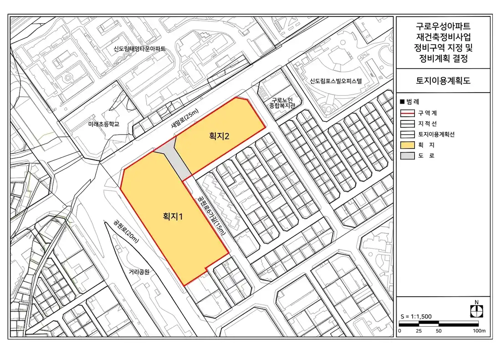

00 / INTRODUCTION
사업성 보정계수
서울시 재개발·재건축 정비사업 | 제도·산식·적용사례·사업성 개선
K1.0—2.0
SEOUL URBAN RENEWAL2026 / POLICY REVIEW
사업성
보정계수
보정계수
목표 저사업성 정비사업 촉진
수단 허용용적률 인센티브 보정
검증 분양물량 · 사업수지 · 추진단계
수단 허용용적률 인센티브 보정
검증 분양물량 · 사업수지 · 추진단계
근거 서울시 세부기준 ↗ · 서울시 2026 성과 ↗01
01 / 제도의 이해
사업성 보정계수
정비사업 경제성 보완을 위한 용적률 인센티브 조정제도
적용 대상서울시
재개발 · 재건축정비계획 수립·변경 시
재개발 · 재건축정비계획 수립·변경 시
›
보정 수단허용용적률
인센티브 × K계수 1.0~2.0
인센티브 × K계수 1.0~2.0
›
정책 목적분양 여력 확대
사업 추진 촉진수입 증가 가능성 · 부담 완화
사업 추진 촉진수입 증가 가능성 · 부담 완화
지원 방식현금 보조금 ×
적용 대상전체 용적률 ×
실제 조정인센티브 부분 ○
근거 서울시 세부기준 ↗02
01 / 제도의 이해
적용 대상 · 적용 절차
사업 유형 확인 → 자료 산정 → 보정계수 적용 → 정비계획 반영
사업 유형
재개발주택정비형 재개발공시지가 비율
재건축공동주택 재건축지가 + 대지 + 밀도
단독주택재건축: 재개발 기준 적용
재정비촉진지구: 별도 적용기준 확인
재정비촉진지구: 별도 적용기준 확인
01적용 사업 유형재개발 / 재건축
02산정 자료 확보공시지가 · 대지면적 · 기존 세대수
03사업성 보정계수 K적용조건·상한 검토
04정비계획 반영허용용적률 → 물량 → 추정 사업수지
근거 서울시 세부기준 ↗03
02 / 도입 배경
정비사업 추진의 제약
지역별 분양수익 격차 + 건설비 부담 + 기존 단지의 구조적 불리
01
₩
지역별 분양가격 격차
낮은 시장가격
분양수입의 상대적 한계
02
↗
공사비·금융비 증가
지역별 분양가와 다른
건설원가 상승 구조
03
▥
기존 단지 여건
소규모 대지 · 고밀도
일반분양 물량 부족
정책 방향사업성이 부족한 정비사업 → 추가 분양 여력 확보 → 정비사업 촉진
근거 서울시 세부기준 ↗ · 서울시 2026 성과 ↗04
02 / 도입 배경
제도 도입 타임라인
정비절차 개선에서 사업성 개선 지원으로의 정책 확대
신속통합기획정비사업 계획·절차 지원
사업비 부담 확대공사비·금융비 증가
서울시 사업지원 방안사업성 보정계수 발표
정비기본계획 개정제도 도입·세부기준 시행
적용 57곳 발표평균 일반분양 +47세대
소규모정비 확대모아타운 60·가로주택 8
핵심 전환 추진 절차 단축 → 정비사업의 수익성 확보
근거 서울시 세부기준 ↗ · 서울시 2026 성과 ↗ · 서울시 모아타운 심의 ↗05
03 / 사업성 구조
공시지가 ≠ 분양가격
공통 입지·시장 여건이 토지가치와 주택가격에 각각 영향
입지 · 교통 · 인프라 · 수요 · 거래시장
↙ ↘
공시지가토지가치 지표K 산정의 기준값
분양가격시장수익 지표분양수입 산정의 변수
정책상 판단공시지가: 사업성의 간접 지표
실제 사업성분양수입 − 전체 사업비
근거 서울시 세부기준 ↗06
03 / 사업성 구조
정비사업의 경제성
토지 매입형 개발과 조합 방식 정비사업의 차이
일반 토지 매입형 개발
토지 매입 → 개발
토지가격 하락→토지매입비 절감
시행자 신규 토지 취득재개발·재건축 조합 방식
기존 소유자 → 출자·분양
일반분양 수익↔사업비·조합원 부담
종전자산·권리가액·조합원 분양가사업 총수입일반분양 + 기타 수입
−총사업비공사비 + 금융비 + 기타비용
=사업 수지가용 사업잉여
근거 서울시 세부기준 ↗07
04 / 용적률 체계
용적률의 네 단계
기준 210% → 허용 230% → 상한 250% → 법적상한 300% (제3종일반주거지역 설명 예시)
210%기준용적률
+20허용
+20상한
+50법적상한
01 기준기본계획의 출발점
02 허용계획기준 충족 · 인센티브
03 상한공공시설 제공 등
04 법적상한추가 완화 · 별도 공급조건
사업성 보정계수의 작동 위치02 허용용적률 인센티브
근거 서울시 세부기준 ↗ · 서울시 정비사업 자료 ↗08
04 / 용적률 체계
K 적용 전후 비교
전체 용적률 × K ✕ | 허용용적률 인센티브 × K ○
K = 1.00210% + (20%p × 1.0)
230%
기준 210%
20
K = 2.00210% + (20%p × 2.0)
250%
기준 210%
40
허용용적률 = 기준용적률 + (확보 인센티브 × K)
근거 서울시 세부기준 ↗09
05 / 산식
전체 산식 구성
공통 기준: 서울시 평균 공시지가 ÷ 대상구역 평균 공시지가
재개발K = 공시지가 비율지가 여건 보정
재건축K = 공시지가 비율 + α + β지가 + 소규모 대지 + 기존 고밀도
K 적용값 = min(2.00, max(1.00, 계산값))
계산 사례
1.85 + 0.20 + 0.15 = 2.20
실제 적용 2.00근거 서울시 세부기준 ↗10
05 / 산식
재개발 · 공시지가 비율
서울시 기준지가와 대상지 지가에 따른 보정계수 계산
설명용 예시 · 2025년 평균 공시지가
서울시 재개발 평균 공시지가630.30만 원/㎡
200만850만
공시지가 비율1.41
허용용적률 시뮬레이션
보정 전230%
보정 후238.2%
기준 210% · 확보 인센티브 20%p
보정계수 적용 범위 1.00~2.00
근거 서울시 2026 성과 ↗ · 서울시 세부기준 ↗11
05 / 산식
재건축 ① · 대지면적 α
소규모 단지에 추가 보정값 적용
10,000㎡ 이하α = 0.20
10,000~20,000㎡ 미만직선보간 · 0.20→0.10
20,000㎡ 이상적용 없음 · 0
대지면적과 α의 관계
구로우성 대지면적 16,813.7㎡ → α 0.14
근거 서울시 세부기준 ↗ · 서울시 구로우성 고시 ↗12
05 / 산식
재건축 ② · 세대밀도 β
기존 조합원에게 평균 전용 85㎡ 공급이 어려운 단지의 추가 보정
STEP 01세대당 공급 가능 면적
대지면적 × 가용용적률기존 세대수
가용용적률 250% = 2.5로 환산STEP 02 / 적용 대상 판정
기존 150세대
일반분양 여력 상대적 확대
기존 300세대
조합원 공급 우선 · 일반분양 축소
같은 대지·가용용적률 → 조합원 수에 따른 분양 여력 차이
전용 59㎡ 미만: β 0.20 | 59~84.9㎡: 보간 | 전용 85㎡ 이상: 미적용
세대밀도 보정 β대상 단지만 최대 +0.20
구로우성기존 344세대 수용 가능 · β=0
근거 서울시 세부기준 ↗ · 서울시 구로우성 고시 ↗13
06 / 실제 산식
구로우성아파트 · 실제 정비계획
2025.03.06 정비계획 고시 | 두 획지와 대지면적 확인

구로우성아파트 재건축
실제 산정자료
정비구역 전체17,714.1㎡
α 산정 대지16,813.7㎡
기존 세대수344세대
획지 1 + 획지 2 → 대지면적 16,813.7㎡
근거 서울시 구로우성 고시 ↗14
06 / 실제 산식
구로우성 · K 1.43 산출
정비계획 고시의 실제 계산값 → 허용용적률
공시지가 비율1.297,192,258 ÷ 5,588,458
+대지 α0.14대지 16,813.7㎡
+세대밀도 β0.00기존 344세대 수용 가능
=적용 K1.43최대 2.0 이내
최대 허용용적률210% + (20%p × 1.43) = 238.6%
분양 증가 +12세대: 다른 기준 변경과 결합된 계획상 추정치 · K의 독립 효과 아님
근거 서울시 구로우성 고시 ↗15
07 / 사업성 메커니즘
사업성 개선 경로 · 두 가지
건축 가능 규모 확대 / 동일 규모 내 분양 가능 구성 변화
A / 허용용적률 확대
230%→250%
- 허용 연면적 증가
- 분양 가능 물량 증가 가능성
B / 동일 총용적률 300%
보정 전
분양 275%
보정 후
분양 285%
- 법적상한 완화분 축소
- 분양 가능 용적률 +10%p (조건부 예시)
근거 서울시 세부기준 ↗ · 서울시 정비사업 자료 ↗16
07 / 사업성 메커니즘
용적률 → 분양수입 → 사업수지
가상 대지 10,000㎡ · 인센티브 20%p · K 1.0→2.0
01 / 추가 허용 연면적+2,000㎡10,000㎡ × 20%p
×02 / 분양 가능 비율75%가상 사업조건
=03 / 추가 분양면적+1,500㎡추가 수입의 기초
추가 분양수입+150억1,500㎡ × 1,000만 원/㎡
−추가 사업비80억공사비·금융비 등 가정
=추가 사업잉여+70억확정 수익 아님
조합원 200명 단순 균등배분 시 3,500만 원/명 · 실제 분담금은 종전자산·비례율·조합원 분양가 등 별도 반영
근거 서울시 세부기준 ↗17
08 / 실제 적용
실제 적용 효과 · 사업지별 비교
계수 → 분양 가능 물량 → 조합원 1인당 추정 분담금 경감
| 사업지 / 유형 | 보정계수 K | 일반분양 증가 | 1인당 부담 감소 추정 | 추진단계 |
|---|---|---|---|---|
| 대흥·성원·동진빌라재건축 | 2.00 | +118세대 | 약 1억 원 | 후속 사업 추진 |
| 방학신동아1단지재건축 | 2.00 | +148세대 | 약 3,800만 원 | 사업시행자 지정 |
| 상계동 154-3재개발 | 1.96 | +332세대 | 약 7,200만 원 | 정비계획 심의 |
| 상도15구역재개발 | 1.77 | +74세대 | 약 3,000만 원 | 통합심의 |
| 상도14구역재개발 | 1.58 | +53세대 | 약 6,000만 원 | 사업시행자 지정 |
| 상봉13구역재개발 | 1.64 | +43세대 | 약 6,000만 원 | 조합설립인가 |
* 서울시 발표 당시 정비계획 추정치 · 실제 확정 분담금 아님 · 다른 완화제도와 복합 적용 가능
근거 서울시 2026 성과 ↗18
08 / 실제 적용
사업성 개선의 규모 · 실제 사업지
방학신동아: 추가 분양수입과 조합원당 부담 경감의 관계
도봉구 · 방학신동아1단지 / 재건축
K 2.00
허용용적률 인센티브
20%p → 40%p
47층 · 총 4,099세대 계획
일반분양 증가+148세대
추가 분양수입 추정약 1,060억 원
조합원 1인당 분담금 감소 추정약 3,800만 원
추정 분양수입 ≠ 추가 순이익 · 확정 분담금 ≠ 계획 추정액근거 서울시 2026 성과 ↗19
08 / 실제 적용
서울 적용 사업지 분포
확인 사업지 20곳 · 서울시 전체 적용 57곳은 별도 공식 집계
서울 25개 자치구 경계
전체 공식 집계57개소
강북 30 · 서남 2495%
번호·사업지 선택 → 계수·용적률·추진단계
근거 서울시 2026 성과 ↗20
08 / 실제 적용
적용 사업지 전체 비교표
20개 사업지 검색 · 유형 필터 · 계수 및 계획수치
20곳
| No. | 사업지 | 유형 | K | 용적률·인센티브 | 분양증가 / 부담감소 | 현재 확인단계 |
|---|
기준: 개별 확인 사업지 20곳 · 서울시 전체 적용 구역 57곳과 구분 · 사업지별 공개 시점 상이
근거 서울시 2026 성과 ↗21
09 / 확대 적용
모아타운 · 가로주택정비사업
별도 보정계수 상한 1.5 · 공공기여 부담 조정
2026.03 적용 계획
60모아타운
8가로주택정비사업
보정계수 범위 1.0–1.5
일반 재개발·재건축 K 최대 2.0과 구분
면목·사당 모아주택 5개 사업 · 계획변경
총 공급 2,121세대 유지
변경 전 임대
503세대
변경 후 임대
342세대
임대 −161세대 → 분양 가능 물량 확대
근거 서울시 모아타운 심의 ↗22
10 / 성과 검증
사업성 개선과 정비사업 촉진
정책목표에 따른 성과 평가 체계
① 계획상 사업성확인
57곳 심의 통과
일반분양 평균 +47세대
② 조합원 부담추정
사업지별 예상 분담금 감소
수천만 원~1억 원 수준
③ 사업 추진일부 확인
조합설립·사업시행·통합심의
후속 단계 진전
④ 실제 정산 성과미확정
착공·분양·관리처분 분담금
추가 추적 필요
정책 목표저사업성 정비사업의 추진 촉진
근거 서울시 2026 성과 ↗23
10 / 성과 검증
종합 결론
사업성 확보 → 분양 여력 확대 → 사업 추진 기반 조성
사업성 보정계수
수단허용용적률 인센티브 보정
효과분양물량·예상 수지 개선
목표정비사업 추진 촉진
57곳정비계획 심의
+47세대구역당 일반분양 증가 추정
후속 인허가일부 사업 추진 진전
후속 검증 항목 · 확정 공사비 · 관리처분 분담금 · 일반분양 실적 · 착공·준공
근거 서울시 2026 성과 ↗24